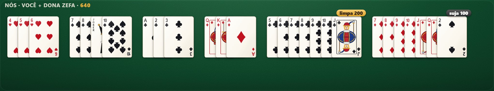
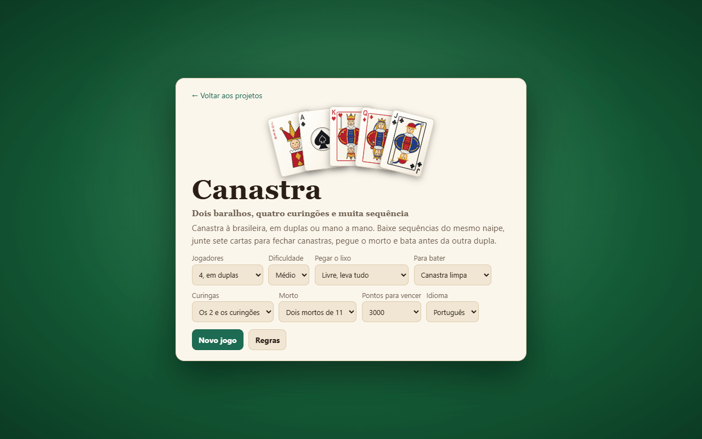
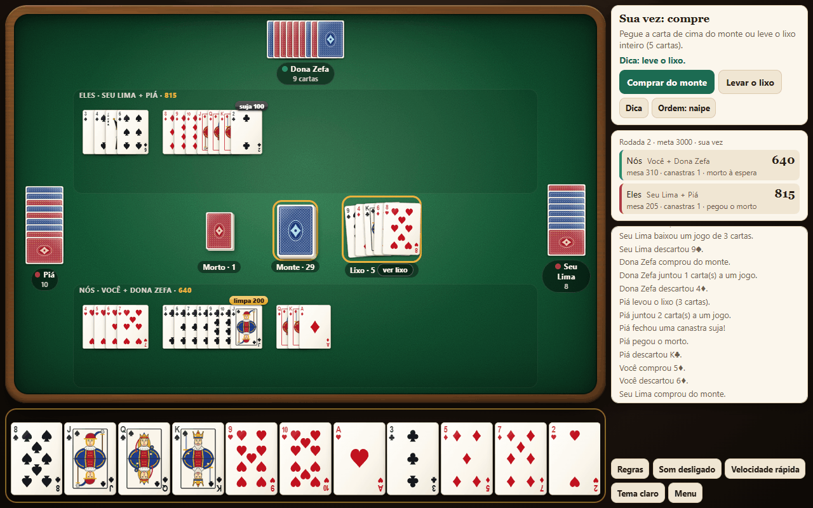
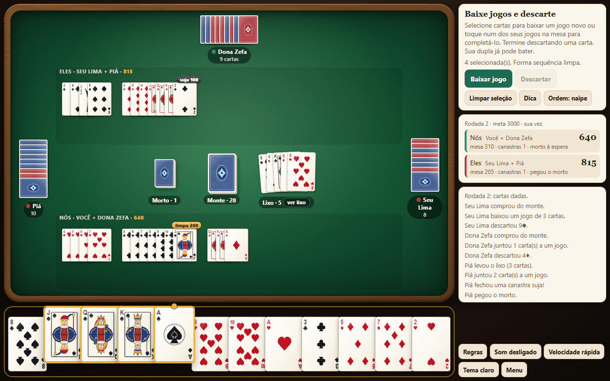
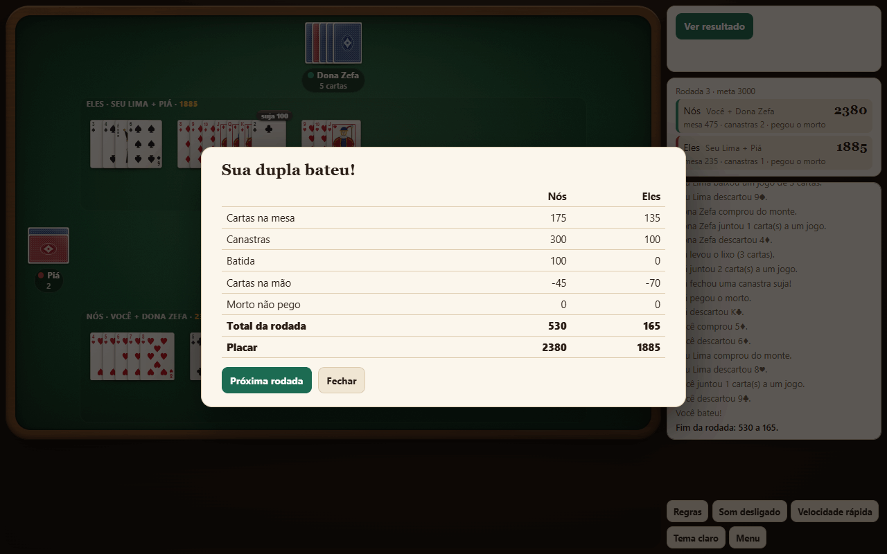
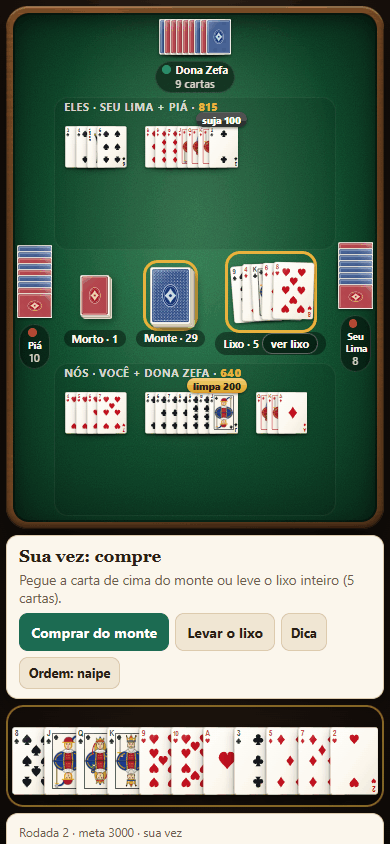

O jogo em um minuto
A canastra é um jogo de cartas com dois baralhos, jogado no Brasil quase sempre em duplas: você e o parceiro sentam frente a frente e somam os pontos juntos. O objetivo é baixar na mesa sequências do mesmo naipe e fazê-las crescer até sete cartas ou mais, a canastra, que vale um bônus grande. [1]
Cada rodada termina quando alguém bate: fica sem cartas depois de a dupla já ter pegado o morto e fechado uma canastra. Os pontos se acumulam de uma rodada para outra até uma dupla passar da meta, que no jogo do site é de 3000 pontos, salvo mudança nas opções.
↑ Voltar ao topoAs cartas e o que valem
São dois baralhos comuns de 52 cartas e mais quatro curingões, 108 cartas ao todo. [1] No jogo os dois baralhos têm versos de cores diferentes, vermelho e azul, como numa mesa de verdade. A cor do verso não muda nada nas regras.
Há dois tipos de curinga: o curingão, que é o coringa do baralho, e o 2 de qualquer naipe. Os dois podem substituir qualquer carta numa sequência. Cada carta tem um valor em pontos, que conta a favor quando está na mesa e contra quando sobra na mão no fim da rodada: [1]
| Carta | Pontos |
|---|---|
| Curingão | 20 |
| Ás | 15 |
| 2 | 10 |
| 8, 9, 10, valete, dama e rei | 10 |
| 3, 4, 5, 6 e 7 | 5 |
No começo de cada rodada, cada jogador recebe 11 cartas. Separam-se ainda dois montinhos de 11 cartas, os mortos, e o resto fica no centro como monte de compra. O lixo, a pilha de descartes, começa vazio.
↑ Voltar ao topoOs jogos que valem
Na canastra deste jogo só valem sequências: três cartas ou mais, seguidas e do mesmo naipe, como 4, 5 e 6 de copas. Trincas de cartas iguais não valem. [1]

- No máximo um curinga por jogo. O curingão ou o 2 ocupa o lugar de uma carta que falta, como o 9 em 7, 8, curingão e 10 de espadas. [1]
- O 2 do mesmo naipe é carta natural quando fica no lugar do 2: ás, 2 e 3 de paus é uma sequência limpa. Por isso uma canastra suja vira limpa quando o curinga é o 2 do naipe e a sequência chega até o lugar dele.
- O ás vale nas duas pontas. Pode vir antes do 2 (ás, 2 e 3) ou depois do rei (dama, rei e ás). Uma sequência pode ir de ás a ás, com 14 cartas. [1]
- O jogo arruma a ordem sozinho. Você escolhe as cartas e ele mostra a sequência ordenada, com o curinga no buraco ou numa das pontas.
Para fixar
- Sequência do mesmo naipe, com 3 cartas ou mais.
- No máximo um curinga em cada jogo.
- O ás vale antes do 2 ou depois do rei.
Começar uma partida
Ao abrir o jogo aparece a tela de entrada, com as opções da partida. Os valores que vêm marcados seguem as regras deste tutorial. Mude só se a sua mesa joga de outro jeito.

| Opção | O que faz |
|---|---|
| Jogadores | 4 em duplas, com o computador como parceiro e como adversários, ou 2, mano a mano. |
| Dificuldade | No Fácil o computador erra mais e quase não usa curinga. No Difícil ele evita descartar cartas que encaixam nos jogos dos adversários. |
| Pegar o lixo | Livre: quem pega leva o lixo inteiro. Usando a carta de cima: só pode pegar se a carta de cima entrar num jogo na mesma vez. |
| Para bater | Exige canastra limpa ou aceita qualquer canastra. |
| Curingas | Os 2 e os curingões, ou só os 2, com 104 cartas. |
| Morto | Dois mortos de 11 cartas ou nenhum. |
| Pontos para vencer | 1500, 3000 ou 5000. |
| Idioma | Português, inglês, italiano ou espanhol. |
O botão Continuar aparece quando há uma partida salva. O jogo guarda a partida no navegador a cada lance.
↑ Voltar ao topoA mesa

- Parceiro e adversários. O parceiro fica à sua frente e os adversários, dos lados. As cartas viradas mostram quantas cada um tem na mão. O nome de quem está jogando fica dourado.
- Jogos baixados. A faixa de cima é da outra dupla e a de baixo, da sua. Ao lado dos nomes aparece o placar acumulado.
- Centro. Da esquerda para a direita: os mortos que ainda restam, cruzados como se arruma na mesa, o monte e o lixo. O botão ver lixo mostra todas as cartas descartadas, da mais antiga à de cima.
- Sua mão. Fica embaixo, sempre ordenada. O botão Ordem troca entre ordenar por naipe e por valor. Os curingas ficam no fim.
- Painel. Diz o que fazer agora e traz os botões. Abaixo ficam o placar, com os pontos já baixados por dupla e se ela pegou o morto, e o histórico de lances.
Sua vez, passo a passo
Toda vez tem três partes: comprar, baixar e descartar. [1]
1. Comprar
Toque no monte para pegar a carta de cima, ou toque no lixo para levar todas as cartas dele. Levar o lixo dá muitas opções de jogo, mas também enche a mão de cartas que contam contra você se a rodada acabar. Com a opção usando a carta de cima, o jogo só deixa levar o lixo se a carta de cima puder entrar num jogo. Ela fica marcada com um ponto laranja até ir para a mesa.
2. Baixar jogos
Toque nas cartas para selecioná-las: elas sobem e ganham contorno dourado. O painel diz na hora se a seleção forma sequência limpa, sequência com curinga ou ainda nada.

- Para começar um jogo novo, toque em Baixar jogo.
- Para completar um jogo da sua dupla, selecione as cartas e toque no jogo na mesa. Os jogos que aceitam a seleção ganham contorno dourado.
- Você pode baixar quantos jogos quiser na mesma vez.
3. Descartar
Selecione uma carta só e toque em Descartar ou no próprio lixo. A vez passa para o jogador da direita.
↑ Voltar ao topoCanastras, morto e batida
Canastras
Um jogo com 7 cartas ou mais é uma canastra. Ela continua aberta: dá para seguir juntando cartas. O jogo marca cada canastra com um selo e contorna a última carta. [1] [2]
| Canastra | Bônus |
|---|---|
| Limpa, sem curinga | 200 |
| Suja, com curinga | 100 |
| Limpa de 13 cartas (meia real) | 500 |
| Limpa de ás a ás, 14 cartas (real) | 1000 |
O morto
O primeiro jogador de cada dupla que fica sem cartas pega um morto e continua jogando com ele: [1]
- se ficou sem cartas ao baixar, pega o morto na hora e segue a vez, ainda devendo o descarte;
- se ficou sem cartas ao descartar, pega o morto e joga com ele na vez seguinte.
Cada dupla pega um morto só. A dupla que termina a rodada sem ter pegado o seu perde 100 pontos, se a outra pegou.
A batida
Depois do morto, a dupla só pode bater se tiver a canastra que as opções pedem, que no padrão é a limpa. Bater é ficar sem cartas, baixando tudo ou descartando a última. A batida vale 100 e encerra a rodada. [1] [2]
Enquanto a dupla não pode bater, o jogo não deixa você ficar com menos de duas cartas depois de baixar: ainda falta o descarte, e a mão não pode zerar. Se tentar, aparece o aviso Fique com cartas para descartar.
Quando o monte acaba
Se o monte acaba, um morto que ninguém pegou vira o novo monte. Se não sobrou morto, a rodada termina sem batida. [1]
↑ Voltar ao topoA contagem de pontos
No fim da rodada, cada dupla soma o valor das cartas que baixou e os bônus, e desconta as cartas que ficaram na mão dos seus dois jogadores. [1]

Na figura, a sua dupla tinha na mesa uma sequência de copas do 4 ao 8, uma canastra limpa de paus, dama, rei e ás de ouros e uma canastra suja de espadas, somando 175 pontos em cartas. As canastras valem 200 e 100, e a batida, mais 100. Sobraram 45 pontos na mão da parceira, que saem do total: 175 + 300 + 100 − 45 = 530.
Para fixar
- Carta na mesa soma; carta na mão subtrai.
- Canastra limpa 200, suja 100; batida 100.
- Dupla que não pegou o morto perde 100.
No celular
No celular, a mesa fica em cima, o painel com os botões logo abaixo e a sua mão em seguida. O placar e o histórico ficam mais para baixo, rolando a página.

Quando a mão fica grande, depois de levar um lixo cheio, o jogo divide as cartas em duas fileiras sobrepostas, deixando à vista o canto de cada uma.
↑ Voltar ao topoDicas para jogar melhor
Medimos estilos de jogo em 2000 partidas simuladas até 3000 pontos: a sua dupla jogava com o estilo indicado, contra uma dupla no nível Difícil. Numa disputa equilibrada, cada dupla venceria 50% das vezes, com margem de erro de cerca de 2,2 pontos. [5]
| Estilo da sua dupla | Vitórias |
|---|---|
| Referência: o nível Difícil, sem mudança | 51,0% |
| Leva o lixo só quando a carta de cima serve | 0,6% |
| Nunca leva o lixo | 0,0% |
| Segura os jogos até ter 6 cartas ou menos | 0,0% |
| Não gasta curinga para abrir jogo novo | 4,8% |
| Descarta sempre a carta de mais pontos | 21,1% |
| Descarta ao acaso | 20,9% |
Os computadores não jogam como pessoas, então olhe para a direção desses números, não para o valor exato.
Leve o lixo, mesmo sem saber o uso de cada carta
Nunca levar o lixo deu 0,0% de vitórias, e levar só quando a carta de cima serve deu 0,6%. Na regra livre o lixo vem inteiro, e é dele que saem as cartas para fechar canastras. A referência levou o lixo em 35,2% das compras, inclusive quando ele tinha 3 cartas ou mais e a de cima não servia.
Baixe cedo
Segurar os jogos até ter 6 cartas ou menos deu 0,0%, e essa dupla não bateu nenhuma vez. Carta na mesa soma e cresce em canastra; carta na mão só ameaça descontar.
Use o curinga para abrir jogo
Não usar curinga para abrir jogo novo derrubou as vitórias para 4,8%. Um curinga que abre mais uma sequência rende mais do que guardado. O cuidado é outro: não suje uma sequência que está perto de virar canastra limpa.
No descarte, pense nos seus jogos, não nos pontos
Descartar sempre a carta de mais pontos deu 21,1%, quase o mesmo que descartar ao acaso (20,9%). Guarde as cartas que encostam nos seus jogos, mesmo que valham 10.
Não dê cartas aos adversários
Antes de descartar, olhe os jogos da outra dupla. Uma carta que encaixa neles é um presente, ainda mais quando o lixo está grande.
Siga o parceiro
Os jogos são da dupla. Complete as sequências que o parceiro começou, em vez de abrir outra no mesmo naipe.
Erros comuns
Tentar baixar trinca
Só valem sequências do mesmo naipe. Três setes não formam jogo, nem de naipes diferentes.
Pôr dois curingas no mesmo jogo
O limite é um. Um segundo 2 só entra se for do naipe da sequência e ficar no lugar do 2.
Esquecer o descarte
Depois de baixar, ainda falta descartar. Por isso a mão não pode zerar enquanto a dupla não pode bater.
Achar que dá para bater sem canastra
Bater exige o morto já pego e a canastra pedida nas opções, limpa no padrão.
Regras que mudam de mesa para mesa
Canastra e buraco variam muito entre famílias, clubes e torneios. As diferenças mais comuns:
- Pontuação das canastras. Há regulamentos com limpa valendo 300 e suja 200, em vez de 200 e 100. [3]
- Valor da batida. Em algumas mesas ela vale 50, em vez de 100. [4]
- Trincas. No buraco fechado valem também jogos de cartas iguais, e o lixo só sai usando a carta de cima. [1] O jogo do site tem a opção do lixo, mas não as trincas.
- Dupla vulnerável. A dupla que já tem metade da meta precisa baixar pelo menos 75 pontos no primeiro jogo da rodada. [1] O jogo do site não usa essa regra.
- Primeira jogada. No Pagat, quem começa pode descartar a primeira carta comprada e comprar outra. [1] O jogo do site também não usa essa regra.
- Meta. 2000, 3000 e 3500 pontos são comuns. [1]
Glossário
- Batida
- Ficar sem cartas e encerrar a rodada. Vale 100.
- Canastra
- Jogo de 7 cartas ou mais.
- Canastra limpa
- Canastra sem curinga. Vale 200.
- Canastra suja
- Canastra com curinga. Vale 100.
- Canastra real
- Canastra limpa de ás a ás, com 14 cartas. Vale 1000. Com 13 cartas é meia real e vale 500.
- Curinga
- O 2 de qualquer naipe, que substitui uma carta.
- Curingão
- O coringa do baralho. Também substitui uma carta e vale 20 pontos.
- Lixo
- A pilha de descartes, também chamada de bagaço.
- Monte
- As cartas viradas de onde se compra.
- Morto
- Montinho de 11 cartas que o primeiro da dupla a ficar sem cartas recebe como nova mão.
- Sequência
- Três cartas ou mais, seguidas e do mesmo naipe.
Revisão rápida
Em resumo
- Dois baralhos e quatro curingões; 11 cartas na mão e dois mortos.
- Compre do monte ou leve o lixo inteiro, baixe sequências e descarte uma carta.
- Canastra é jogo de 7 cartas: limpa 200, suja 100.
- Bate quem fica sem cartas depois do morto, com a canastra exigida.
1. Três reis de naipes diferentes formam um jogo?
Não. Neste jogo só valem sequências do mesmo naipe.
2. 7 e 8 de espadas, um 2 de copas e o 10 de espadas formam um jogo?
Sim, uma sequência suja: o 2 de copas é curinga no lugar do 9 de espadas.
3. Ás, 2 e 3 de paus é sequência limpa ou suja?
Limpa. O 2 de paus está no lugar do 2, então conta como carta natural.
4. Quanto vale uma canastra suja? E uma limpa de 13 cartas?
100 e 500.
5. Você baixou todas as cartas e a sua dupla ainda não pegou o morto. O que acontece?
Você pega o morto na hora, continua a vez e ainda precisa descartar.
6. Por que o jogo não deixa você baixar e ficar com uma carta só?
Porque a sua dupla ainda não pode bater: o descarte deixaria a mão vazia.
Referências
- Pagat.com. Buraco. Atualizado em 13/05/2016. Descreve o jogo como jogado no Brasil, também com o nome de canastra; é a base das regras deste tutorial.
- Prefeitura de Joinville. Regulamento técnico, 30º Jogos de Integração da 3ª Idade, 2023. Canastra limpa 200, suja 100 e batida 100.
- Unochapecó. Regulamento JUICS 2016. Usa canastra limpa 300 e suja 200.
- Tribuna de Minas. Coluna Mais Tendências. Cita a batida valendo 50 pontos.
- Simulações próprias com o jogo Canastra deste site, feitas entre jogadores do computador. Não medem pessoas.